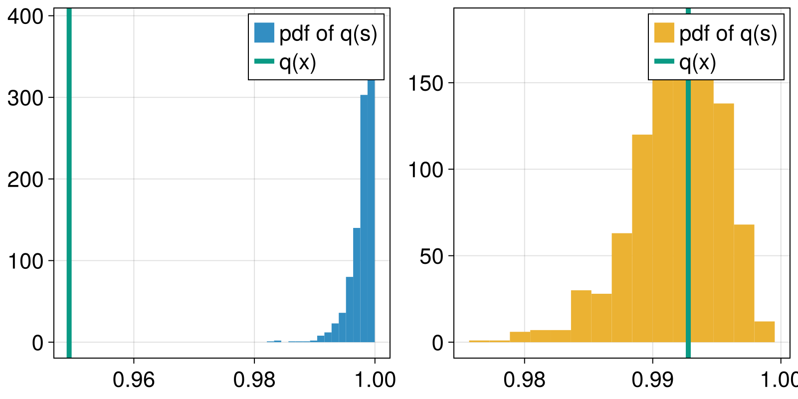
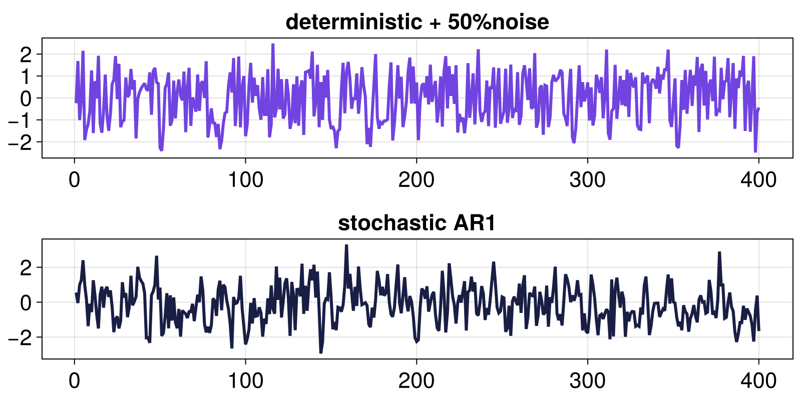
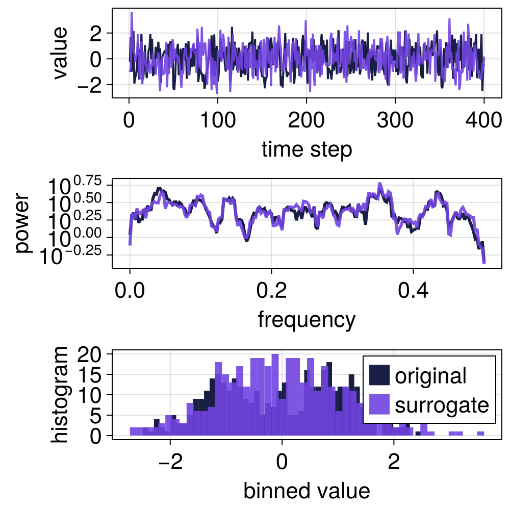

Tutorial

TimeseriesSurrogates.jl provides a simple interface for surrogate timeseries. To use it, one must first choose one of the many surrogate generation algorithms, which are listed in the API page. Most of them have instructions for what scenario they are suitable for.
Let's start with first loading the packages we need and generating two example timeseries that we will analyse with the help of surrogates. One is stochastic, and the other is noisy deterministic.
using TimeseriesSurrogates # for surrogate tests
using DynamicalSystemsBase # to simulate logistic map
using Random: Xoshiro # for reproducibility
using CairoMakie # for plotting
# AR1
n = 400 # timeseries length
rng = Xoshiro(1234567)
x = TimeseriesSurrogates.AR1(; n_steps = n, k = 0.25, rng)
# Logistic
logistic_rule(x, p, n) = @inbounds SVector(p[1]*x[1]*(1 - x[1]))
ds = DeterministicIteratedMap(logistic_rule, [0.4], [4.0])
Y, t = trajectory(ds, n-1)
y = standardize(Y[:, 1]) .+ 0.5randn(rng, n) # 50% observational noise
# Plot
fig, ax1 = lines(y)
ax2, = lines(fig[2,1], x, color = Cycled(2))
ax1.title = "deterministic + 50%noise"
ax2.title = "stochastic AR1"
fig
It's difficult to tell whether either timeseries has signatures of deterministic chaos, right?
For these timeseries, we will make Fourier-transformed surrogates using RandomFourier. For example, for the logistic map timeseries we can create a surrogate with surrogate or create and visualize one at the same time using surroplot
method = RandomFourier()
surrogate(y, method)400-element Vector{Float64}:
-3.079551614211375
0.17995525901612397
0.6707193143572042
-2.0289361984309697
-0.5032087507558215
0.8082699664748304
-0.4495191751072629
0.31974407909541414
1.2658431343494212
1.6586485855769508
⋮
0.7761035058190006
0.21918183000243702
-0.36965815243345534
0.7368995982851516
-0.4309257293623262
-0.5768173533200572
0.09143919667145098
-1.664927257145209
-0.6809015670182013surroplot(y, method)
We will use timeseries surrogates to highlight how one can distinguish deterministic chaos contaminated with noise from actual stochastic timeseries, using the permutation entropy as a discriminatory statistic. If you're not sure what a "discriminatory statistic" means, you should read the crash-course below.
To do this, we will compute surrogate distributions for both timeseries using the permutation entropy as the discriminatory statistic and RandomFourier as the surrogate generation method. We will also utilize the surrogenerator API function which allows us to more efficiently generate many surrogate realizations. Essentially, the construct sgen = surrogenerator(signal, method) allows us to call s = sgen() to make a surrogate s in the fastest way possible.
Here's the code:
using ComplexityMeasures # to calculate permutation entropy
perment(x) = entropy_normalized(OrdinalPatterns(; m = 3), x)
fig = Figure()
axs = [Axis(fig[1, i]) for i in 1:2]
Nsurr = 1000
for (i, z) in enumerate((y, x))
sgen = surrogenerator(z, method)
qz = perment(z)
qs = map(perment, (sgen() for _ in 1:Nsurr))
hist!(axs[i], qs; label = "pdf of q(s)", color = Cycled(i))
vlines!(axs[i], qz; linewidth = 5, label = "q(x)", color = Cycled(3))
axislegend(axs[i])
end
fig
we clearly see that the discriminatory value for the deterministic signal is so far out of the distribution that the null hypothesis that the timeseries is stochastic can be discarded with ease.
This whole process can be easily automated with SurrogateTest as follows:
test = SurrogateTest(perment, y, method; n = 1000, rng)
p = pvalue(test)
p < 0.001 # 99.9-th quantile confidencetrueessentially this code calculated the surrogate discriminatory value distribution, compared it with the discriminatory value for the input signal and provided a p-value for the hypothesis.
Crash-course in timeseries surrogate testing
The summary here follows Sect. 7.4 from Nonlinear Dynamics by Datseris and Parlitz.
What is a surrogate timeseries?
A surrogate of a timeseries x is another timeseries s of equal length to x. This surrogate s is generated from x so that it roughly preserves one or many pre-defined properties of x, but is otherwise randomized.
The upper panel in the figure below shows an example of a timeseries and one surrogate realization that preserves its both power spectrum and its amplitude distribution (histogram). Because of this preservation, the time series look similar.
using TimeseriesSurrogates, CairoMakie
x = LinRange(0, 20π, 300) .+ 0.05 .* rand(300)
ts = sin.(x./rand(20:30, 300) + cos.(x))
s = surrogate(ts, IAAFT())
surroplot(ts, s)Performing surrogate hypothesis tests
A surrogate test is a statistical test of whether a given timeseries satisfies or not a given hypothesis regarding its properties or origin.
For example, the first surrogate methods were created to test the hypothesis, whether a given timeseries x that appears noisy may be the result of a linear stochastic process or not. If not, it may be a nonlinear process contaminated with observational noise. For the suitable hypothesis to test for, see the documentation strings of provided Surrogate methods or, even better, the review from Lancaster et al. (2018)[Lancaster2018].
To perform such a surrogate test, you need to:
- Decide what hypothesis to test against
- Pick a surrogate generating
methodthat satisfies the chosen hypothesis - Pick a suitable discriminatory statistic
qwithq(x) ∈ Real. It must be a statistic that would obtain sufficiently different values for timeseries satisfying, or not, the chosen hypothesis. - Compute
q(s)for thousands of surrogate realizationss = surrogate(x, method) - Compare
q(x)with the distribution ofq(s). Ifq(x)is significantly outside the e.g., 5-95 confidence interval of the distribution, the hypothesis is rejected.
This whole process is automated by SurrogateTest, as shown in the example above.
- Lancaster2018Lancaster, G., Iatsenko, D., Pidde, A., Ticcinelli, V., & Stefanovska, A. (2018). Surrogate data for hypothesis testing of physical systems. Physics Reports, 748, 1–60. doi:10.1016/j.physrep.2018.06.001